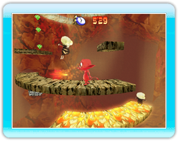

|
9
|
Juego principal
|
 |
|

Comenzar una partida En el menú principal, selecciona Juego principal para comenzar una partida. A continuación, decide si quieres comenzar una partida nueva o cargar una de las guardadas para continuarla.
Principio del juego El juego comienza en la guarida de Cocoto, desde la que éste se lanzará a la búsqueda de los que han secuestrado a sus amigos. Durante la aventura deberás explorar 5 mundos tan fascinantes como peligrosos. Por suerte, Fairy te ayudará en tu largo viaje.
Acciones
Correr Inclina la palanca de control hacia la derecha o la izquierda.
Saltar Pulsa el Botón A para dar un salto sencillo. ¡Una vez en el aire, pulsa de nuevo el Botón A para realizar un salto doble!
Crear arcos de lava ¡Cocoto puede crear arcos de lava siempre que quiera! Pulsa el Botón B para crear un arco. Puedes utilizarlos como puente y subirte encima. Para ello, inclina la palanca de control hacia la derecha o la izquierda. ¡También son una efectiva arma contra tus enemigos! Además puedes destruirlos saltando encima y llegar a los enemigos situados más abajo.
Lanzar horcas ¡Pulsa el Botón Z para lanzar horcas a tus enemigos! Puedes incluso hacerlo en pleno salto para alcanzar, por ejemplo, a enemigos aéreos.
Golpe especial ¡Mueve rápidamente el mando de Wii cuando estés cerca de tus enemigos para realizar un golpe especial! |
 |
 |
 |